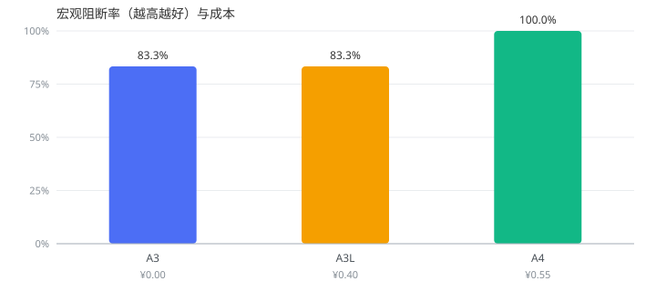
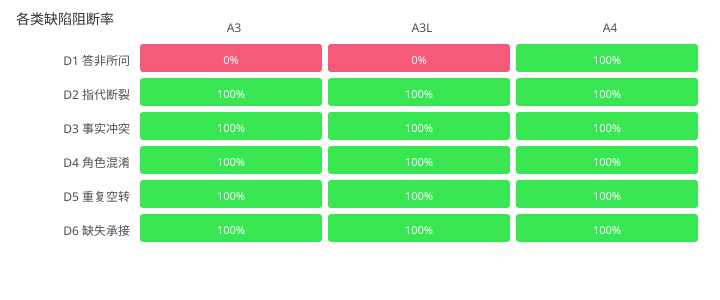
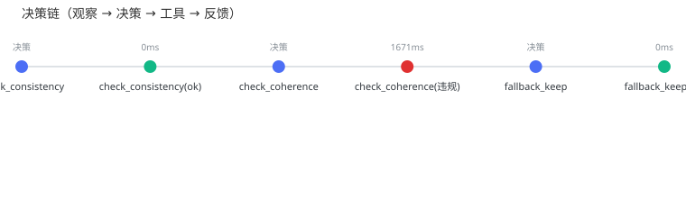

Case 01 · Agent Runtime
工具调用型对话修复 Agent
它不是把 prompt 套个循环，而是一个有工具契约、预算护栏、Trace 与回放能力的 Agent 运行时：模型只负责在 ReAct 循环里选工具，参数由运行时注入； 每个设计选择都要在单变量消融里证明净收益，否则回退原文。
qwen3:8b 上运行，现金支出 ¥0；页面中的 ¥ 是按 DeepSeek 高峰价折算的
参考成本。RAG 与 Planning 已接入真实执行链路，但尚未做“有/无”消融，
因此不宣称它们带来指标提升。
它解决什么问题
模板拼接生成的对话“局部通顺、全局不连贯”，模块或场景切换处容易出现答非所问、 指代断裂、角色混淆等问题。如果对每条对话都调用 LLM 检测并改写，成本高，而且无法证明 改写没有破坏金额、编号、日期等关键内容。因此 Agent 的设计目标不是“生成更好的话术”， 而是在可解释、可回退、可度量的约束下，决定哪些轮次该处理、怎么处理。
这决定了它的形态：一个决策循环 + 工具契约 + 可观测性的运行时， 而不是一次性的 prompt 调用。也正因为如此，本项目的主体工作量在运行时与评测基础设施上， 对话数据只是它要处理的对象。
运行时架构

循环遵循 ReAct 的 Thought → Action → Observation 结构：
policy.decide 产出思考与工具名（Thought），registry.invoke 执行工具（Action），
工具结果回写状态（Observation），直到命中终止工具或预算触顶。
Trace 里的 decide 与 tool_result 事件可以还原成完整的 step 序列，
便于调试与展示。
| ReAct 环节 | 本项目实现 | 落点 |
|---|---|---|
| Thought | policy.decide 返回 reason |
agent/runtime/policy.py |
| Action | 模型只输出工具名，参数由运行时注入 | agent/runtime/loop.py |
| Observation | 工具结果更新 state，写入 Trace | agent/runtime/trace.py |
| Stop / Budget | 终止工具，或迭代 / 调用 / token / 墙钟任一触顶 | agent/runtime/budget.py |
两种执行模式
默认模式是逐轮 ReAct；当对话较长、或已知某些轮次是业务伪影时，可以切到 Planning&Executor：先规划候选轮，再只对候选轮做精细检查。
| 模式 | 规划 | 执行 | 适用 |
|---|---|---|---|
| ReAct（默认） | 无独立规划，逐步决策 | 对全部 assistant 轮执行工具循环 | 短对话、需要完整覆盖 |
| Planning&Executor | plan() 产出候选轮 |
非候选轮交给判官忽略，只检查候选轮 | 长对话、已知伪影轮、控制预算 |
规划不是装饰：候选集会换算成判官的忽略集，execute() 通过
runtime_factory(frozenset) 把它注入 LLMJudge，
因此“规划”真正改变了检查范围。排除轮由调用方显式传入，架构层不硬编码任何轮次。
工具层与安全约束
工具是可替换的纯函数，注册表按臂装配；决策者只选工具名，不直接改写对话文本， 从而减少输出 token，也降低关键字段被自由改写的风险。
| 工具 | 类型 | 作用 | 失败语义 |
|---|---|---|---|
check_consistency |
确定性 | R1–R5 保真校验：system 逐字、结构、实体、说话人分布 | 结构化返回违规，不抛异常 |
check_coherence |
确定性 + 可选判官 | C0–C3 连贯性检查；注入判官后识别答非所问 | 判官异常记 C0_judge_error，不放行 |
fallback_keep |
确定性 | 终止并回退原文 | 保底路径 |
rewrite_segment |
LLM | 受限局部改写；改写后必须复检；可注入检索上下文 | 复检不通过则回退原文 |
安全约束分三层：保真（实体集合不增不减、结构与 role 不变）、
回退（任一硬约束报错就返回原文，判官不可用同样回退）、
预算（迭代 / 工具调用 / token / 墙钟四维上限，重复调用识别，触顶标记
stopped，不输出未经验证的候选）。
服务化与部署
运行时可以脱离评测脚本独立运行：FastAPI 暴露三个端点，Docker Compose 一键起 API 与 Ollama，模型名通过环境变量注入，不在镜像或编排文件里写死。
| 端点 | 用途 | 关键参数 |
|---|---|---|
GET /health |
版本、支持的臂、LLM 端点可达性 | — |
GET /api/v1/arms |
六个消融臂及说明 | — |
POST /api/v1/repair |
对单条对话执行决策循环 | arm、ignore_turns、planning、rag |
容器方面：多阶段构建把依赖安装与运行时分离；Compose 用
depends_on.condition: service_healthy 等 Ollama 健康后再起 API，
用命名卷持久化模型，用 .dockerignore 排除私有 fixture。
另外提供 TypeScript SDK（RepairAgent 类，完整类型定义，基于
fetch 与 AbortSignal.timeout），供非 Python 调用方接入。
检索增强（RAG）
改写阶段可以接入检索：把历史上相似的“问题回复 → 修复后回复”作为参考拼进 prompt。 实现不依赖 Chroma / Milvus，而是用 Ollama 原生 embedding 接口加 numpy 余弦检索， 避免为演示引入重量级依赖。
| 组件 | 实现 |
|---|---|
| 向量化 | OllamaEmbedder，走 /api/embeddings（bge-m3，1024 维） |
| 存储 | VectorStore：vectors.npy + metadata.jsonl，余弦 top-k，支持元数据过滤 |
| 接入 | RAGAugmenter 渲染参考案例，注入 rewrite_segment 的 prompt |
| 降级 | 检索异常时静默降级为无增强，不阻断改写；结果用 rag_used 标记 |
边界：已在端到端测试中验证“检索内容确实进入 prompt”和“检索故障可降级”， 但尚未跑“有 / 无 RAG”的对照臂，因此不把 RAG 写成指标提升的来源。
评测：单变量归因
缺陷集包含 6 类各 20 条，加 12 条干净样本。六个臂按单变量原则逐层加因子：
A2 只做单次 LLM 重写，用来隔离“工具循环”本身的净收益；A3 用规则决策 + 确定性工具；
A3L 只把决策者换成 LLM function calling；A3R 给规则策略补上 rewrite_segment；
A4 在 A3L 上加语义判官；A4R 是 LLM 决策拿到完整工具集后的上限。
| 臂 | 决策 | 工具 | D1 | D2 | D3 | D4 | D5 | D6 | 误报 | macro | tokens | 参考成本 |
|---|---|---|---|---|---|---|---|---|---|---|---|---|
| A2 | 单次重写 | 无 | 0/20 | 0/20 | 0/20 | 0/20 | 0/20 | 0/20 | 10/12 | 0.0% | 157,507 | ¥0.93* |
| A3 | 规则 | 确定性 | 0/20 | 20/20 | 20/20 | 20/20 | 20/20 | 20/20 | 0/12 | 83.3% | 0 | ¥0.00 |
| A3L | LLM | 确定性 | 0/20 | 20/20 | 20/20 | 20/20 | 20/20 | 20/20 | 0/12 | 83.3% | 233,376 | ¥0.87* |
| A3R | 规则 | 确定性 + rewrite | 0/20 | 20/20 | 20/20 | 6/20 | 10/20 | 20/20 | 0/12 | 63.3% | 40,729 | ¥0.21* |
| A4 | LLM | 确定性 + 判官 | 18/20 | 20/20 | 20/20 | 20/20 | 20/20 | 20/20 | 0/12 | 98.3% | 273,798 | ¥1.06* |
| A4R | LLM | 全工具集 | 6/20 | 20/20 | 20/20 | 20/20 | 15/20 | 20/20 | 0/12 | 84.2% | 429,264 | ¥1.42* |
D1 答非所问 · D2 指代断裂 · D3 事实冲突 · D4 角色混淆 · D5 重复空转 · D6 缺失承接。
* 参考成本：本地实际支出 ¥0；按 DeepSeek deepseek-flash 2026-11 高峰价
（输入 ¥2/M、缓存命中 ¥0.04/M、输出 ¥8/M）
对 append-only 账本全部调用（含判官与重试）折算。tokens 列只统计决策调用，
因此不能直接用 tokens × 单价复算。

结果解读
-
决策策略消融（A3 → A3L）：检测指标不变，资源消耗增加。
两臂使用相同的确定性工具，仅将
RulePolicy替换为LLMPolicy。 宏观阻断率均为 83.3%；A3L 新增 284 次决策调用、233,376 tokens， 按 DeepSeek 价格折算参考成本 ¥0.87。在当前工具集和评测集上， 仅替换决策策略未带来可观测的检测增量。 -
评估器能力消融（A3L → A4）：语义判官是唯一能覆盖 D1 的层。
A4 保持 LLM 决策策略不变，仅向
check_coherence注入语义判官。 D1 阻断数从 0/20 提升至 18/20，宏观阻断率从 83.3% 提升至 98.3%（+15.0pp）， 参考成本增加 ¥0.19。D1 注入仅替换单轮 assistant 的 content， R1–R5 和确定性 C1/C2 规则无法识别跨话题语义；A4 通过C3_off_topic记录违规并触发回退，但仍有 2 条漏判。 -
修复工具改变的是“回退 vs 修复”的分配，不是线性提升 blocked。
A3 → A3R 后，24 条缺陷从回退变为修复（D4 14 条、D5 10 条），
但 blocked 从 83.3% 降到 63.3%。A4R 检出率 100%，却只修复 16 条
（修复率 13.3%，D4 仍全部回退）。完整工具集不等于更高修复率；
repaired只代表“改写后通过校验”，必须人工抽检后才能当作真修复。 -
质量、异常与成本分别统计。
detected表示循环期间出现过违规记录，blocked表示最终状态为fallback；干净样本被回退或被改写都计为干预。 A3L / A4 / A4R 分别有 2 / 2 / 3 条样本运行时failed，已独立计数； 六个臂的判官故障均为 0，结果均标记为valid。 除 A2（10/12）外，其余五个臂的干净样本干预均为 0/12。

真实数据外部有效性：先修测量，再谈指标
在私有轨 200 条真实对话上复核时，判官几乎把所有样本的第 2 轮都判成“答非所问”。 排查后发现这不是模型缺陷：这批数据的首条 user 是业务侧随机采样的开场句， 与后续对话并不构成真实轮次关系，判官按“开场对不连贯”如实报了违规。
处理分两步。第一步做数据规范化：把首条 user 内容替换为占位符，保持消息条数与下标不变，
使缺陷注入仍能对齐。第二步才暴露真正的 Agent 侧问题——判官在“占位符 + 固定开场白”
的稳定模式下会漏判第 4 轮，导致 judge_error_rate 达到 8.33%。
修复方式是把 ignore_turns 从“事后过滤违规”升级为契约层排除：
判官仍对全部轮次输出结论，但被忽略的轮次不计入 expected pairs，
也不参与违约统计。修复后故障率降到 0.34%，结果重新 valid。
这一步的价值不在数字，而在方法：评测基础设施本身会产生伪影， 在相信任何“指标下降”之前，必须先证明测量本身是干净的。 这也是我把评测和运行时放在同一个项目里的原因。
失败案例：为什么必须看语义
下面是公开轨中的一个 D1 案例。注入缺陷时只把第 2 轮回复换成跨话题内容， 句子本身没有任何结构和实体问题。
user : 已经等很久了，麻烦帮我催一下。（订单号 ORD-556516）
assistant : 请在十五分钟内完成支付，否则订单会自动关闭。以下 Trace 来自历史 DeepSeek 运行，仅用于示意决策链；本轮指标来自本地 qwen3:8b。
| 步骤 | 动作 | 结果 |
|---|---|---|
| 1 | check_consistency |
通过：system / 结构 / 实体 / 说话人均未变 |
| 2 | check_coherence |
违规：C3_off_topic @turn 2，用户催单却回复要求支付 |
| 3 | fallback_keep |
回退原文，流程终止 |
{"seq": 4, "t_ms": 2219, "event": "decide", "key": "a932e46ea4f5bbab", "action": "call_tool", "tool": "check_coherence", "reason": "保真校验已通过（check_consistency: ok）。按流程继续做连贯性校验。"}
{"seq": 5, "t_ms": 3891, "event": "tool_result", "key": "a932e46ea4f5bbab", "tool": "check_coherence", "ok": false, "terminal": false, "latency_ms": 1671, "tokens": 673}
{"seq": 6, "t_ms": 5219, "event": "decide", "key": "a932e46ea4f5bbab", "action": "call_tool", "tool": "fallback_keep", "reason": "校验结果：保真校验通过；连贯性校验发现 1 处违规（C3_off_topic @turn 2，用户催单却回复要求支付，答非所问）。按规则不尝试改写，直接兜底保留原文。"}
{"seq": 7, "t_ms": 5219, "event": "tool_result", "key": "a932e46ea4f5bbab", "tool": "fallback_keep", "ok": true, "terminal": true, "latency_ms": 0, "tokens": 0}
{"seq": 8, "t_ms": 5219, "event": "end", "key": "a932e46ea4f5bbab", "status": "fallback", "termination": "tool_terminal"}Trace 原文见 04_trace_sample.jsonl； 完整前后对照见 05_before_after.md。

局限与下一步
- 工具不触达外部世界。四个工具都是纯函数，没有沙箱内的文件读取、 命令执行或网页访问；这是为可单测做的取舍，也是与通用编码 Agent 最大的能力差距。
- 缺上下文管理。长对话全量进入 prompt，没有裁剪、摘要或记忆机制；
planning目前只收窄检查范围，不做语义级的多步规划。 - 缺人机协作与流式。没有中断审批（HITL）、没有流式输出、没有 MCP 接入。
- RAG 与 Planning 未基准化。两者已接入真实链路并有端到端测试， 但还没有“有 / 无”对照臂，不能宣称带来检测或修复提升。
- 修复率仍低。A4R 修复率 13.3%，
repaired样本尚未人工抽检， 不能当作语义正确的证明。 - 单模型、单次运行、小样本。没有多模型对比与置信区间， 也未跑跨臂显著性检验；判官 v3 用公开轨做过开发集校准，仍需未参与调参的样本复核。
- TypeScript SDK 未在本机编译验证。类型与构建配置齐全，
但本机未安装 Node，
tsc验证待补。
下一步按价值排序：给工具组补一个受沙箱约束的真实工具（只读 artifact / 跑测试）→ 加长对话的上下文裁剪并用同一评测集验证 → 做 RAG 与 Planning 的对照臂 → 提升改写修复率并做人工盲评。
我的工作与复现
该 Agent 由我独立设计并实现：运行时（ReAct 决策循环、工具注册表、预算、Trace、checkpoint、 cassette 录制回放、token 账本）、执行模式（Planning&Executor 与判官忽略集契约）、 检索增强（Ollama embedding + 向量检索 + 改写注入 + 降级）、服务化（FastAPI 三端点、 多阶段镜像、Compose 编排、TypeScript SDK）、评测（硬约束、实体抽取、连贯性、语义判官、 六臂对照、基线锁）以及开源清单与边界测试。
开源切片按 oss_manifest.txt 导出，发布文件不含业务标识，
公开代码不依赖上游工程；独立目录实测 577 passed / 1 skipped。
源码仓库：github.com/Soleil-gzm/dialogue-repair-agent
python -m pip install -e ".[dev]"
# 同 seed 生成同数据（默认 v1 冻结基线）
python -m agent.benchmark.fixtures --n 12 --seed 20261112
# 离线复现 A0 基线指纹
python -m agent.benchmark.run \
--input agent/fixtures/public/base_v1.json \
--arms A0 --verify-arm A0
# 本地 Ollama 复现（模型名按本机实际设置）
export DEEPSEEK_API_KEY="ollama"
export DEEPSEEK_BASE_URL="http://127.0.0.1:11434/v1"
export DEEPSEEK_MODEL="qwen3:8b"
export JUDGE_MODEL="qwen3:8b"
export LLM_PRICE_TABLE="local"
python -m agent.benchmark.agent_eval --arm A3 --out logs/.../ablation_A3.json
python -m agent.benchmark.agent_eval --arm A4 --live --out logs/.../ablation_A4.json
# 服务化（本地或容器）
python -m agent.api --port 8000
docker compose up -d --build
python -m pytest完整数据与结论： HTML 报告 · Markdown · JSON。 报告由原始结果直接生成，成本字段为本地实际 ¥0；DeepSeek 参考成本见上表。